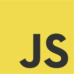

Aspiring Web Developer
Kyle Aldrich Moran
Discover my projects and explore my experience throughout this site!
Tools of the Trade

My Core Values in Software Development
Proactivity
Taking initiative in projects and constantly seeking opportunities for improvement and innovation.

Communication
Listening actively to team members and clients, and articulating ideas clearly and effectively.

Perseverance
Continuously striving to overcome challenges and persisting in the face of difficulties until goals are achieved.
Courage
Boldly tackling complex problems and making decisions that align with ethical and professional standards.

Let us bring your vision to life. Contact me today and let us make it happen!